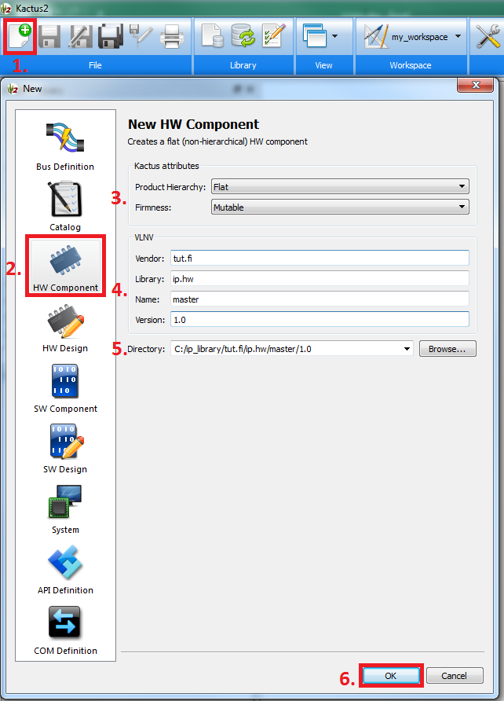

Step 3: Creating Documents
A new document is required for new IP as well as for IP lacking IP-XACT packaging.
- Click the new button on the top ribbon.
- Select a document type, see more details in their corresponding sections in the manual:
- Bus Definition determines constraints for bus connections.
- Catalog groups IP-XACT documents.
- HW Component describes a hardware IP with behavioral functionality.
- HW Design describes an IP that instantiates and connects other hardware IPs.
- SW Component is used to group software source files and set their build rules.
- SW Design describes an IP that instantiates and connects other sofware IPs.
- Systems are subject to a major overhaul in future and should not be used.
- API definition describes external functions provided by software components.
- COM Definition determines constraints for interprocess connections.
- In case of HW component of HW design, you may select hierarchy and firmness. See more details in component editor.
- Type VLNV tuple for the document:
- Vendor identifies the owner. To ensure uniqueness, it should be their internet domain name in left-to-right order (e.g., tut.fi not fi.tut).
- Library is used to group documents, and thus should reflect the type of the IP-XACT document. It is auto-filled with the selected hierarchy, but you may replace it with something more accurate.
- The name should be self-explanatory.
- Technically, another version means another component.
- Select a directory for the new document. Default location is constructed from the VLNV. It is based on the location of the default library, which was chosen in step 1.
- Click ok.
The previous step was accessing documents.
